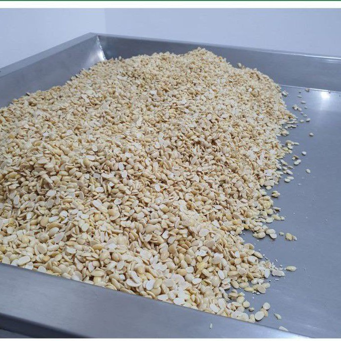
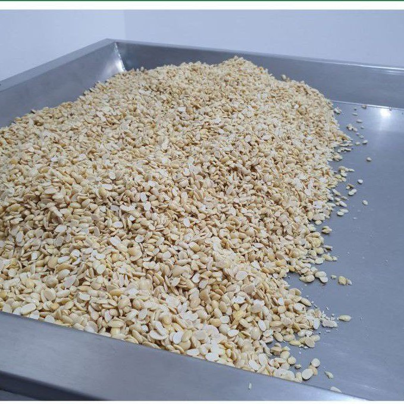

Tempe Oishi
Tempe Oishi - Tempe Higienis Siap Makan dari Rumah Tempe Jabal Nur Sentul.
Tempe Oishi adalah tempe berkualitas tinggi yang diproduksi secara higienis di Rumah Tempe Jabal Nur Sentul. Bisa langsung dimakan tanpa digoreng, menjadikannya pilihan praktis dan sehat.
Kenapa Memilih Tempe Oishi?
Tempe Oishi - Tempe Higienis Siap Makan dari Rumah Tempe Jabal Nur Sentul.
Higienis & Bersih: Diproses dengan standar kebersihan tinggi, dikemas rapi, bebas debu dan kontaminasi.
Siap Makan: Tidak perlu digoreng, langsung konsumsi! Cocok untuk bekal anak dan camilan sehat.
Tanpa Pengawet & Non-GMO: 100% alami, sehat, dan aman dikonsumsi setiap hari.
Rasa Lezat & Tekstur Lembut: Gurih alami, padat, dan enak di setiap gigitan.
Diproduksi oleh UMKM Terpercaya: Rumah Tempe Jabal Nur Sentul sudah dikenal dengan produk tempe berkualitas tinggi.
Kandungan Gizi Unggul!
Tempe Oishi - Tempe Higienis Siap Makan dari Rumah Tempe Jabal Nur Sentul.
Perbandingan Kandungan Gizi Tempe dan Pangan Hewani / 100 gram
Tempe Oishi unggul dalam kandungan serat, karbohidrat, kalsium, fosfor, zat besi, dan magnesium dibanding telur, daging ayam, dan daging sapi. Tempe higienis ini jadi pilihan pangan nabati lokal yang kaya manfaat!

Menggunakan Kedelai A.S. yang Berkelanjutan.
Tempe Oishi - Tempe Higienis Siap Makan dari Rumah Tempe Jabal Nur Sentul.
Menggunakan kedelai dari petani Amerika Serikat yang peduli keberlanjutan lingkungan.
Mendukung UMKM Lokal!
Tempe Oishi - Tempe Higienis Siap Makan dari Rumah Tempe Jabal Nur Sentul.
Kami percaya bahwa UMKM adalah tulang punggung ekonomi bangsa dan perlu mendapatkan dukungan nyata. Melalui produk-produk berkualitas, Tempe Oishi turut berkontribusi dalam memberdayakan pelaku usaha lokal agar bisa naik kelas dan bersaing di pasar yang lebih luas.
Beberapa Foto Produk Kami:
 
